十大雅集 / 百草存真
IX
百草存真
传统医药
收录国家级代表性项目 23 项、182 子项，申报地区涉及 30 个省级行政区，另有中直单位申报的 13 子项。子项最多的地区：浙江省（12）、上海市（11）、广东省（10）。
本馆《太守行纪》剧集
筹备中
传承人
筹备中
项目档案库
23 项、182 子项
（本页配图如无特别标注，均为 AI 生成的示意图，非实拍。）
- IX-1
中医生命与疾病认知方法
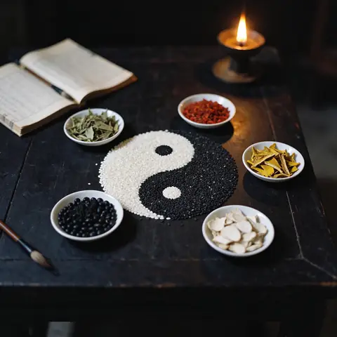
- 中国中医科学院2006 第一批 · 新增项目官方页 →
- IX-2
中医诊疗法
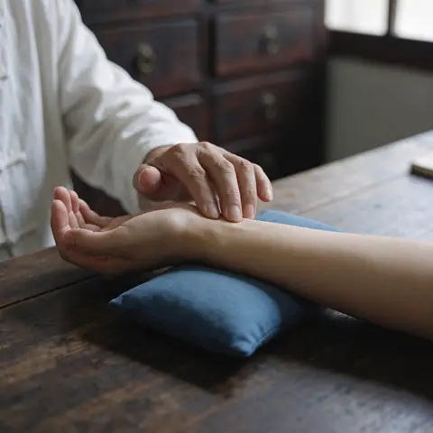
- 中医诊法中国中医科学院2006 第一批 · 新增项目官方页 →
- 中医诊法（葛氏捏筋拍打疗法）北京市海淀区2011 第三批 · 扩展项目官方页 →
- 中医诊法（王氏脊椎疗法）北京市西城区2011 第三批 · 扩展项目官方页 →
- 中医诊法（道虎壁王氏中医妇科）山西省平遥县2011 第三批 · 扩展项目官方页 →
- 中医诊法（朱氏推拿疗法）上海市2011 第三批 · 扩展项目官方页 →
- 中医诊法（张一帖内科疗法）安徽省黄山市2011 第三批 · 扩展项目官方页 →
- 中医诊疗法（清华池传统修脚术）北京市西城区2014 第四批 · 扩展项目官方页 →
- 中医诊疗法（中医络病诊疗方法）河北省石家庄市2014 第四批 · 扩展项目官方页 →
- 中医诊疗法（脏腑推拿疗法）河北省保定市2014 第四批 · 扩展项目官方页 →
- 中医诊疗法（顾氏外科疗法）上海市2014 第四批 · 扩展项目官方页 →
- 中医诊疗法（古本易筋经十二势导引法）上海市2014 第四批 · 扩展项目官方页 →
- 中医诊疗法（丁氏痔科医术）江苏省南京市秦淮区2014 第四批 · 扩展项目官方页 →
- 中医诊疗法（扬州传统修脚术）江苏省扬州市2014 第四批 · 扩展项目官方页 →
- 中医诊疗法（董氏儿科医术）浙江省宁波市海曙区2014 第四批 · 扩展项目官方页 →
- 中医诊疗法（西园喉科医术）安徽省歙县2014 第四批 · 扩展项目官方页 →
- 中医诊疗法（买氏中医外治法）河南省周口市川汇区2014 第四批 · 扩展项目官方页 →
- 中医诊疗法（毛氏济世堂脱骨疽疗法）河南省新蔡县2014 第四批 · 扩展项目官方页 →
- 中医诊疗法（镇氏风湿病马钱子疗法）湖北省咸宁市咸安区2014 第四批 · 扩展项目官方页 →
- 中医诊疗法（一指禅推拿）广东省珠海市2014 第四批 · 扩展项目官方页 →
- 中医诊疗法（贾氏点穴疗法）广东省深圳市2014 第四批 · 扩展项目官方页 →
- 中医诊疗法（孔伯华中医世家医术）北京市朝阳区2021 第五批 · 扩展项目官方页 →
- 中医诊疗法（津沽脏腑推拿）天津市南开区2021 第五批 · 扩展项目官方页 →
- 中医诊疗法（摸骨正脊术）山西省晋中市灵石县2021 第五批 · 扩展项目官方页 →
- 中医诊疗法（丁氏推拿疗法）上海市2021 第五批 · 扩展项目官方页 →
- 中医诊疗法（朱氏妇科疗法）上海市2021 第五批 · 扩展项目官方页 →
- 中医诊疗法（绍派伤寒）浙江省绍兴市2021 第五批 · 扩展项目官方页 →
- 中医诊疗法（祁门蛇伤疗法）安徽省黄山市祁门县2021 第五批 · 扩展项目官方页 →
- 中医诊疗法（南少林理筋整脊疗法）福建省2021 第五批 · 扩展项目官方页 →
- 中医诊疗法（张氏经络收放疗法）河南省新乡市红旗区2021 第五批 · 扩展项目官方页 →
- 中医诊疗法（宋氏中医外科疗法）河南省平顶山市汝州市2021 第五批 · 扩展项目官方页 →
- 中医诊疗法（陈氏蜂疗法）湖南省郴州市2021 第五批 · 扩展项目官方页 →
- 中医诊疗法（李仲愚杵针疗法）四川省2021 第五批 · 扩展项目官方页 →
- 中医诊疗法（海西民间青盐药用技艺）青海省海西蒙古族藏族自治州2021 第五批 · 扩展项目官方页 →
- 中医诊疗法（应氏奇穴疗法）中国民族医药学会2021 第五批 · 扩展项目官方页 →
- IX-3
中药炮制技艺
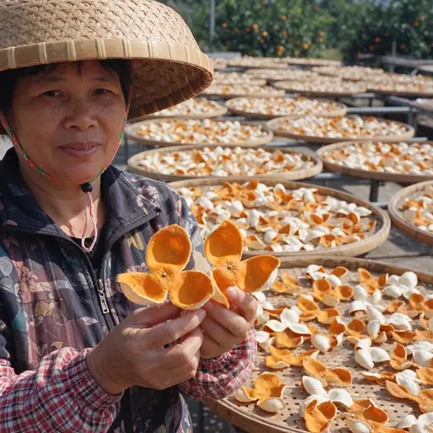
- 中药炮制技术中国中医科学院2006 第一批 · 新增项目官方页 →
- 中药炮制技术中国中药协会2006 第一批 · 新增项目官方页 →
- 中药炮制技术（四大怀药种植与炮制）河南省焦作市2008 第二批 · 扩展项目官方页 →
- 中药炮制技术（中药炮制技艺）四川省成都市2008 第二批 · 扩展项目官方页 →
- 中药炮制技艺（人参炮制技艺）吉林省通化市2014 第四批 · 扩展项目官方页 →
- 中药炮制技艺（人参炮制技艺）吉林省通化市2014 第四批 · 扩展项目官方页 →
- 中药炮制技艺（武义寿仙谷中药炮制技艺）浙江省武义县2014 第四批 · 扩展项目官方页 →
- 中药炮制技艺（樟树中药炮制技艺）江西省樟树市2014 第四批 · 扩展项目官方页 →
- 中药炮制技艺（汉派彭银亭中药炮制技艺）湖北省武汉市江岸区2021 第五批 · 扩展项目官方页 →
- 中药炮制技艺（新会陈皮炮制技艺）广东省江门市新会区2021 第五批 · 扩展项目官方页 →
- 中药炮制技艺（岷县当归加工技艺）甘肃省定西市岷县2021 第五批 · 扩展项目官方页 →
- IX-4
中医传统制剂方法
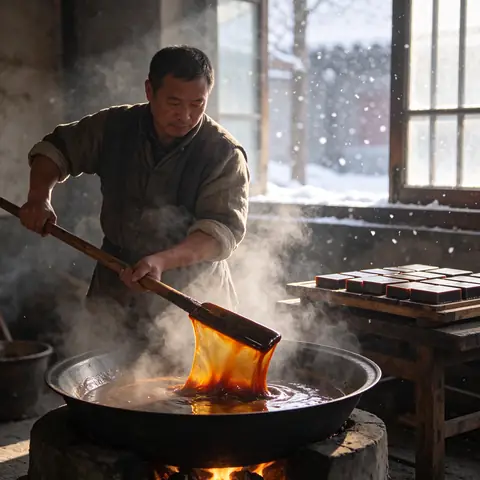
- 中国中医科学院2006 第一批 · 新增项目官方页 →
- 中国中药协会2006 第一批 · 新增项目官方页 →
- 中医传统制剂方法（龟龄集传统制作技艺）山西省太谷县2008 第二批 · 扩展项目官方页 →
- 中医传统制剂方法（雷允上六神丸制作技艺）江苏省苏州市2008 第二批 · 扩展项目官方页 →
- 中医传统制剂方法（东阿阿胶制作技艺）山东省东阿县2008 第二批 · 扩展项目官方页 →
- 中医传统制剂方法（东阿阿胶制作技艺）山东省平阴县2008 第二批 · 扩展项目官方页 →
- 中医传统制剂方法（廖氏化风丹制作技艺）贵州省遵义市红花岗区2008 第二批 · 扩展项目官方页 →
- 中医传统制剂方法（廖氏化风丹制作技艺）贵州省遵义市汇川区2008 第二批 · 扩展项目官方页 →
- 中医传统制剂方法（达仁堂清宫寿桃丸传统制作技艺）天津中新药业集团股份有限公司达仁堂制药厂2011 第三批 · 扩展项目官方页 →
- 中医传统制剂方法（定坤丹制作技艺）山西省太谷县2011 第三批 · 扩展项目官方页 →
- 中医传统制剂方法（六神丸制作技艺）上海市黄浦区2011 第三批 · 扩展项目官方页 →
- 中医传统制剂方法（致和堂膏滋药制作技艺）江苏省江阴市2011 第三批 · 扩展项目官方页 →
- 中医传统制剂方法（季德胜蛇药制作技艺）江苏省南通市2011 第三批 · 扩展项目官方页 →
- 中医传统制剂方法（朱养心传统膏药制作技艺）浙江省杭州市2011 第三批 · 扩展项目官方页 →
- 中医传统制剂方法（漳州片仔癀制作技艺）福建省漳州市2011 第三批 · 扩展项目官方页 →
- 中医传统制剂方法（夏氏丹药制作技艺）湖北省京山县2011 第三批 · 扩展项目官方页 →
- 中医传统制剂方法（马应龙眼药制作技艺）湖北省武汉市武昌区2011 第三批 · 扩展项目官方页 →
- 中医传统制剂方法（罗浮山百草油制作技艺）广东省博罗县2011 第三批 · 扩展项目官方页 →
- 中医传统制剂方法（保滋堂保婴丹制作技艺）广东省医药行业协会2011 第三批 · 扩展项目官方页 →
- 中医传统制剂方法（桐君阁传统丸剂制作技艺）重庆市南岸区2011 第三批 · 扩展项目官方页 →
- 中医传统制剂方法（安宫牛黄丸制作技艺）北京市东城区2014 第四批 · 扩展项目官方页 →
- 中医传统制剂方法（安宫牛黄丸制作技艺）天津市南开区2014 第四批 · 扩展项目官方页 →
- 中医传统制剂方法（隆顺榕卫药制作技艺）天津市南开区2014 第四批 · 扩展项目官方页 →
- 中医传统制剂方法（益德成闻药制作技艺）天津市红桥区2014 第四批 · 扩展项目官方页 →
- 中医传统制剂方法（京万红软膏组方与制作技艺）天津市西青区2014 第四批 · 扩展项目官方页 →
- 中医传统制剂方法（金牛眼药制作技艺）河北省定州市2014 第四批 · 扩展项目官方页 →
- 中医传统制剂方法（安宫牛黄丸制作技艺）山西省太谷县2014 第四批 · 扩展项目官方页 →
- 中医传统制剂方法（点舌丸制作技艺）山西省新绛县2014 第四批 · 扩展项目官方页 →
- 中医传统制剂方法（鸿茅药酒配制技艺）内蒙古自治区凉城县2014 第四批 · 扩展项目官方页 →
- 中医传统制剂方法（平氏浸膏制作技艺）吉林省长春市九台区2014 第四批 · 扩展项目官方页 →
- 中医传统制剂方法（枇杷露传统制剂）黑龙江省哈尔滨市南岗区2014 第四批 · 扩展项目官方页 →
- 中医传统制剂方法（老王麻子膏药制作技艺）黑龙江省哈尔滨市道外区2014 第四批 · 扩展项目官方页 →
- 中医传统制剂方法（方回春堂传统膏方制作技艺）浙江省杭州市上城区2014 第四批 · 扩展项目官方页 →
- 中医传统制剂方法（二仙膏制作技艺）山东省济宁市任城区2014 第四批 · 扩展项目官方页 →
- 中医传统制剂方法（太安堂麒麟丸制作技艺）广东省汕头市2014 第四批 · 扩展项目官方页 →
- 中医传统制剂方法（昆中药传统中药制剂）云南省昆明市2014 第四批 · 扩展项目官方页 →
- 中医传统制剂方法（马明仁膏药制作技艺）陕西省西安市碑林区2014 第四批 · 扩展项目官方页 →
- 中医传统制剂方法（达仁堂牛黄清心丸制作技艺）天津市2021 第五批 · 扩展项目官方页 →
- 中医传统制剂方法（宏仁堂紫雪散传统制作技艺）天津市红桥区2021 第五批 · 扩展项目官方页 →
- 中医传统制剂方法（腰痛宁组方及其药物炮制工艺）河北省承德市2021 第五批 · 扩展项目官方页 →
- 中医传统制剂方法（王氏保赤丸制作技艺）江苏省南通市2021 第五批 · 扩展项目官方页 →
- 中医传统制剂方法（叶开泰传统中药制剂方法）湖北省武汉市2021 第五批 · 扩展项目官方页 →
- 中医传统制剂方法（马氏济慈堂生育药剂制作技艺）宁夏回族自治区吴忠市2021 第五批 · 扩展项目官方页 →
- IX-5
针灸
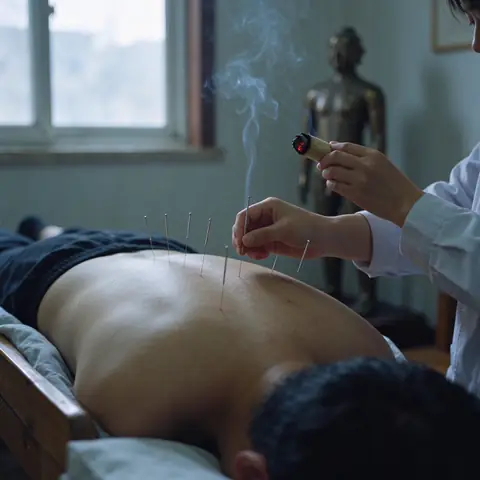
- IX-6
中医正骨疗法
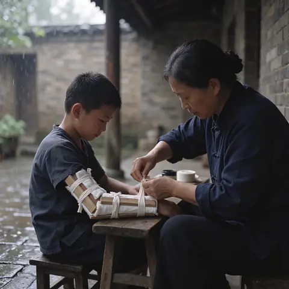
- 中国中医科学院2006 第一批 · 新增项目官方页 →
- 中医正骨疗法（宫廷正骨）北京市护国寺中医医院2008 第二批 · 扩展项目官方页 →
- 中医正骨疗法（罗氏正骨法）北京市朝阳区2008 第二批 · 扩展项目官方页 →
- 中医正骨疗法（石氏伤科疗法）上海市黄浦区2008 第二批 · 扩展项目官方页 →
- 中医正骨疗法（平乐郭氏正骨法）河南省洛阳市2008 第二批 · 扩展项目官方页 →
- 中医正骨疗法（平乐郭氏正骨法）广东省深圳市2008 第二批 · 扩展项目官方页 →
- 中医正骨疗法（武氏正骨疗法）山西省高平市2011 第三批 · 扩展项目官方页 →
- 中医正骨疗法（张氏骨伤疗法）浙江省富阳市2011 第三批 · 扩展项目官方页 →
- 中医正骨疗法（章氏骨伤疗法）浙江省台州市2011 第三批 · 扩展项目官方页 →
- 中医正骨疗法（林氏骨伤疗法）福建省福州市仓山区2011 第三批 · 扩展项目官方页 →
- 中医正骨疗法（海城苏氏正骨）辽宁省海城市2014 第四批 · 扩展项目官方页 →
- 中医正骨疗法（上海石氏伤科疗法）上海市2014 第四批 · 扩展项目官方页 →
- 中医正骨疗法（新泰孟氏正骨疗法）山东省新泰市2014 第四批 · 扩展项目官方页 →
- 中医正骨疗法（新邵孙氏正骨术）湖南省新邵县2014 第四批 · 扩展项目官方页 →
- 中医正骨疗法（三空李氏正骨）内蒙古自治区呼和浩特市2021 第五批 · 扩展项目官方页 →
- 中医正骨疗法（魏氏伤科疗法）上海市2021 第五批 · 扩展项目官方页 →
- 中医正骨疗法（施氏伤科疗法）上海市黄浦区2021 第五批 · 扩展项目官方页 →
- 中医正骨疗法（徐氏中医正骨）山东省滨州市沾化区2021 第五批 · 扩展项目官方页 →
- 中医正骨疗法（燕青门正骨疗法）重庆市江北区2021 第五批 · 扩展项目官方页 →
- 中医正骨疗法（朱氏正骨术）陕西省渭南市富平县2021 第五批 · 扩展项目官方页 →
- IX-7
同仁堂中医药文化
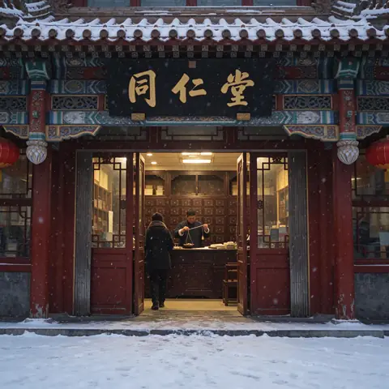
- 中国北京同仁堂（集团）有限责任公司2006 第一批 · 新增项目官方页 →
- IX-8
胡庆余堂中药文化
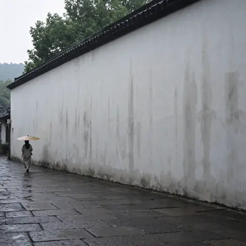
- 浙江省杭州市2006 第一批 · 新增项目官方页 →
- IX-9
藏医药
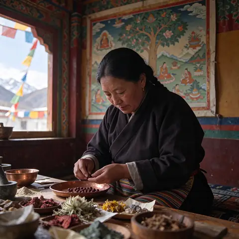
- 藏医药（甘孜州南派藏医药)四川省甘孜藏族自治州2006 第一批 · 新增项目官方页 →
- 藏医药（拉萨北派藏医水银洗炼法和藏药仁青常觉配伍技艺）西藏自治区2006 第一批 · 新增项目官方页 →
- 藏医药（藏医外治法）西藏自治区藏医学院2008 第二批 · 扩展项目官方页 →
- 藏医药（藏医尿诊法）西藏自治区山南地区藏医院2008 第二批 · 扩展项目官方页 →
- 藏医药（藏医药浴疗法）青海省藏医院2008 第二批 · 扩展项目官方页 →
- 藏医药（甘南藏医药）甘肃省碌曲县2008 第二批 · 扩展项目官方页 →
- 藏医药（藏药炮制技艺）西藏自治区藏医院2008 第二批 · 扩展项目官方页 →
- 藏医药（藏药七十味珍珠丸配伍技艺）西藏自治区藏药厂2008 第二批 · 扩展项目官方页 →
- 藏医药（藏药珊瑚七十味丸配伍技艺）西藏自治区雄巴拉曲神水藏药厂2008 第二批 · 扩展项目官方页 →
- 藏医药（藏药阿如拉炮制技艺）青海省金诃藏药药业股份有限公司2008 第二批 · 扩展项目官方页 →
- 藏医药（七十味珍珠丸赛太炮制技艺）青海省金诃藏药药业股份有限公司2008 第二批 · 扩展项目官方页 →
- 藏医药（藏医骨伤疗法）云南省迪庆藏族自治州2011 第三批 · 扩展项目官方页 →
- 藏医药（山南藏医药浴法）西藏自治区山南地区2014 第四批 · 扩展项目官方页 →
- 藏医药（藏医放血疗法）青海省2014 第四批 · 扩展项目官方页 →
- 藏医药（索瓦日巴——藏医有关生命、健康及疾病的认知与实践）西藏自治区2021 第五批 · 扩展项目官方页 →
- 藏医药（藏医脉泻杂炯疗法）西藏自治区那曲市2021 第五批 · 扩展项目官方页 →
- 藏医药（尤阙疗法）青海省海东市循化撒拉族自治县2021 第五批 · 扩展项目官方页 →
- IX-10
- IX-11
传统中医药文化
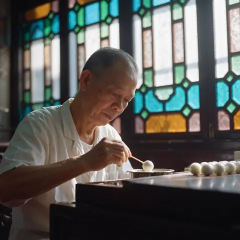
- 传统中医药文化（鹤年堂中医药养生文化）北京鹤年堂医药有限责任公司2008 第二批 · 新增项目官方页 →
- 传统中医药文化（九芝堂传统中药文化）湖南省九芝堂股份有限公司2008 第二批 · 新增项目官方页 →
- 传统中医药文化（潘高寿传统中药文化）广东省广州潘高寿药业股份有限公司2008 第二批 · 新增项目官方页 →
- 传统中医药文化（陈李济传统中药文化）广东省广州陈李济制药厂2008 第二批 · 新增项目官方页 →
- 传统中医药文化（同济堂传统中药文化）贵州省同济堂制药有限公司2008 第二批 · 新增项目官方页 →
- 传统中医药文化（桐君传统中药文化）浙江省杭州市桐庐县2021 第五批 · 扩展项目官方页 →
- 传统中医药文化（朱丹溪中医药文化）浙江省金华市义乌市2021 第五批 · 扩展项目官方页 →
- 传统中医药文化（宏济堂中医药文化）山东省济南市2021 第五批 · 扩展项目官方页 →
- 传统中医药文化（龙山药王医药文化）湖南省邵阳市新邵县2021 第五批 · 扩展项目官方页 →
- IX-12
- IX-13
- IX-14
瑶族医药
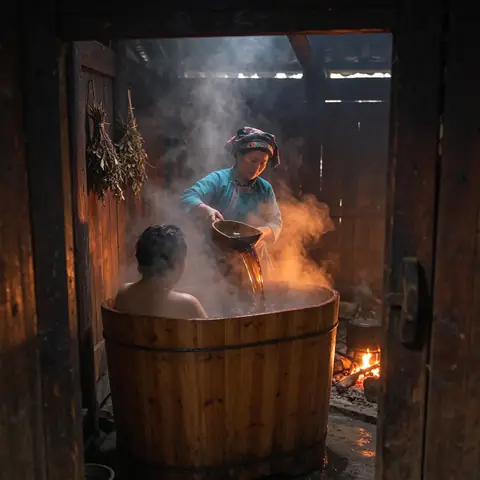
- 瑶族医药（药浴疗法）贵州省从江县2008 第二批 · 新增项目官方页 →
- IX-15
- IX-16
侗医药
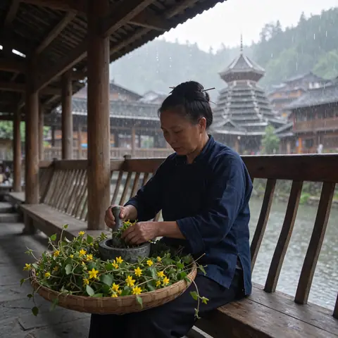
- 侗医药（过路黄药制作工艺）贵州省黔东南苗族侗族自治州2008 第二批 · 新增项目官方页 →
- IX-17
- IX-18
壮医药
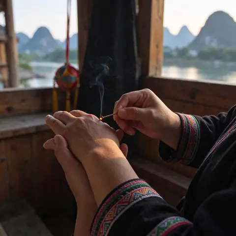
- 壮医药（壮医药线点灸疗法）广西中医学院2011 第三批 · 新增项目官方页 →
- IX-19
- IX-20
- IX-21
- IX-22
布依族医药
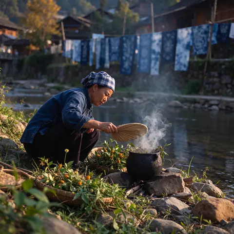
- 布依族医药（益肝草制作技艺）贵州省贵定县2014 第四批 · 新增项目官方页 →
- IX-23
哈萨克族医药
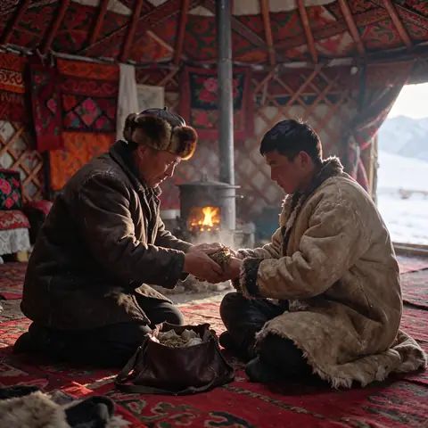
- 哈萨克族医药（布拉吾药浴熏蒸疗法、卧塔什正骨术、冻伤疗法）新疆维吾尔自治区阿勒泰地区2014 第四批 · 新增项目官方页 →
名录数据来源：中国非物质文化遗产网